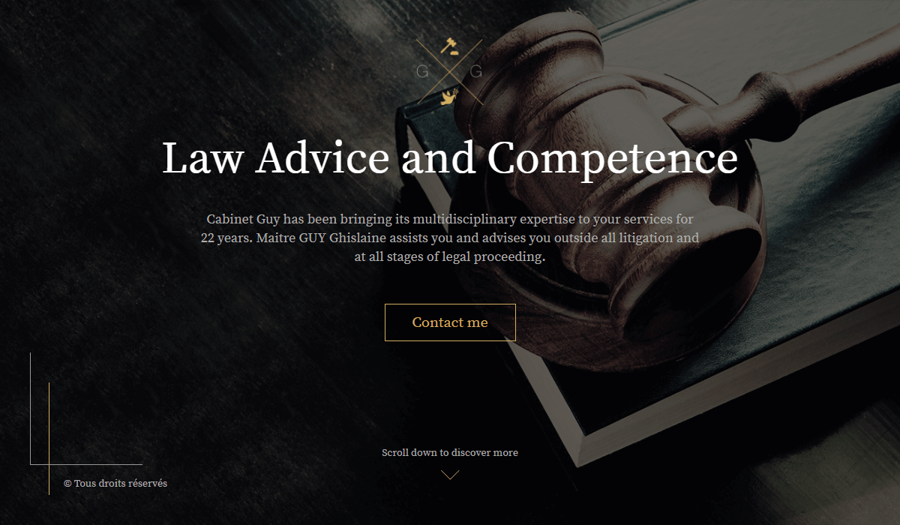
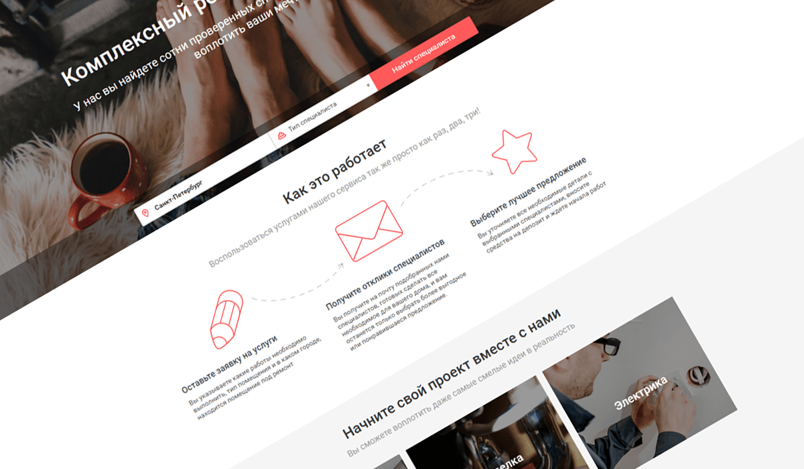
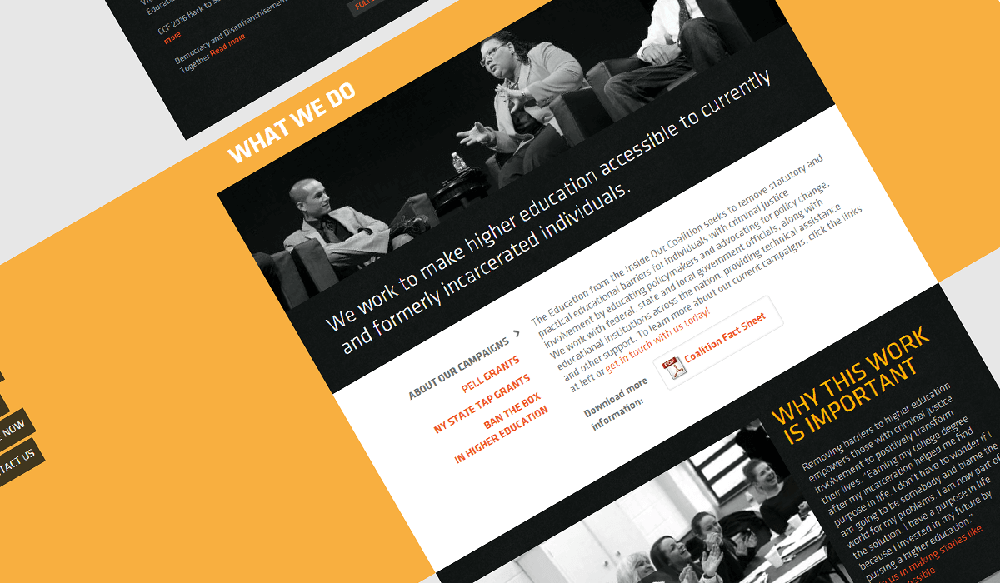
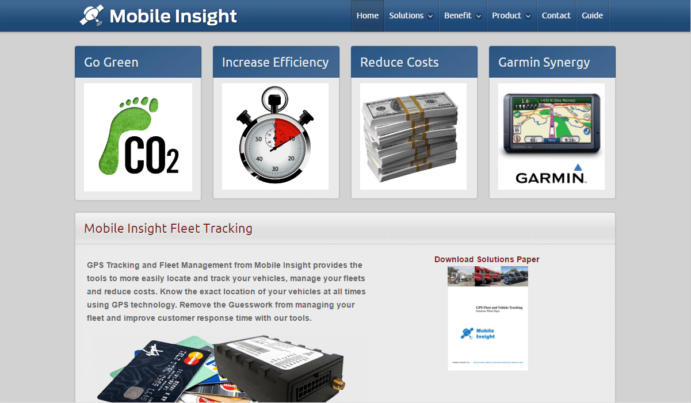
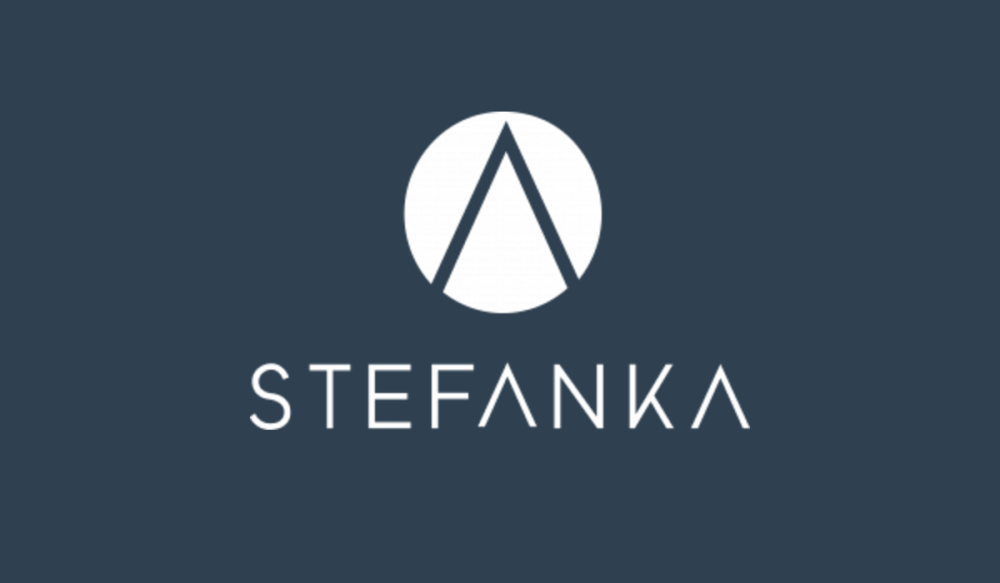
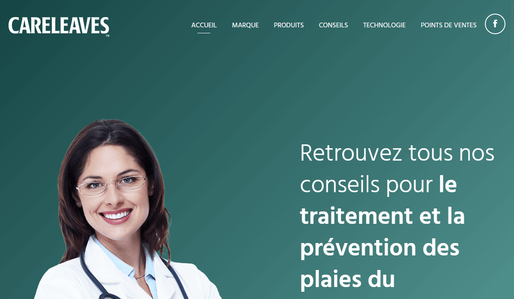

Cabinet Guy is the experienced multidisciplinary lawyer's company. The CEO come to me by recommendation of my previous client.
They wanted to promote they services on the Internet through a mobile-friendly landing page. The client already have a design in Sketch.
I used Avocode and Github with continuous integration to maximally involve the client in the development process.
Used technologies & tools:
HTML, CSS + SASS, JS, Gulp, Mobile-first approach, Git

The client wanted to test the startup idea of individual builders aggregator. He looked for a mobile-friendly landing page which can collect reach analytic information. So they find me as the frontend guy and the designer.
We developed a design with 3 views (mobile, tablet, desktop) and upload it to Zeplin to get clear and instant feedback from the client.
After approval of the design, we make it live as a responsive web page.
We used Google Analytics to collect 20+ metrics of how user interact with the landing page (scrolling and idling info, button clicks, form events, device info).
To collect emails of interested visitors we configured Mailchimp.
Used technologies & tools:
HTML, CSS + LESS, JS, Mobile-first approach, Gulp, Zeplin.io, Google Analytics, Github, Mailchimp

EIO is a collaborative of advocates helps prisoners with getting a higher education.
When they contact me, they already have a desktop site. The client wanted to make existing site mobile-friendly to attract more visitors and investors.
EIO increased they monthly donations by 35% after developing of the mobile-friendly version of the site.

MobileInsightInc is USA company, that provides GPS tracking and fleet management to more easily locate and track vehicles, manage fleets and reduce costs.
The CTO of the company asked me to join a small team of ASP.NET developers as a fullstack developer. The goal was to attract new big clients with stable service and outstanding features.
My personal contribution:
1) email notifications: speed limit alert, location enter or leave alert, fuel alert;
2) maintenance module to notify customers when specific vehicle need maintenance based on collected data;
3) user access management system to create read-only users;
4) develop new report types (mileage by state, maintenance state of fleet) and speed up existing;
5) increase site loading speed and optimize database;
6) improvements of UI and UX to make it mobile- and user-friendly.
The service built with the usage of ASP.NET MVC 5, Windows Services, MS SQL Server, Entity Framework 6, Simple Injector, RabbitMQ on the backend, and React, Bootstrap, Google Maps API on the front.

Stefanka is a Canadian software company that provides apparel and workwear retailers with interactive clothing fit solutions meant to help their customers find the perfect garments for their unique curves and fitting preferences.
I was invited to the Stefanka team as a full-stack developer to implement admin panel for partners (called backoffice). They wanted an MVP (minimal viable product) web app that they can demonstrate to potential investors and partners.
In the MVP team decided to implement authentication for iOS application, processing of scans from fitting rooms, generation clothing recommendations relying on scans, managing of partners clothing databases. Based on requirements I created SPA (single page application) to reach all client goals.
Used technologies & tools:
Node.js + Express, REST API + Swagger, AWS ElasticBeanstalk + Lambda, AWS DynamoDb + S3, React, Redux, Redux Saga, Mandrill, Rollbar, HTML, CSS, LESS, JS, JWT, Gulp, Cloudflare, Github

Nichiban is a Japanese medical company that manufactures variety of useful products based on unique adhesives and adhesion technologies, supporting people's health.
They come to me with the design of the site for "Careleaves" product. The client wanted to launch this product on the french market, so they received a site with mobile-friendly landing page from me.
Used technologies & tools:
HTML, CSS + SASS, JS, Gulp, Mobile-first, Git